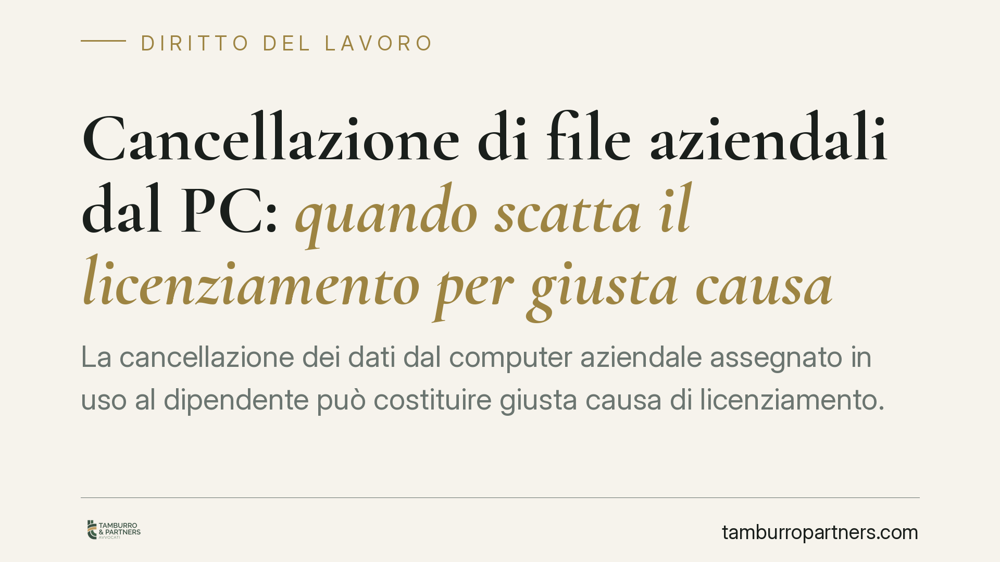

Cancellazione di file aziendali dal PC: quando scatta il licenziamento per giusta causa
La cancellazione dei dati dal computer aziendale assegnato in uso al dipendente può costituire giusta causa di licenziamento. Una recente pronuncia di merito ribadisce che la condotta lede il vincolo fiduciario a prescindere dalla prova di un danno economico concreto. Un principio che impone attenzione sia ai datori di lavoro sia ai lavoratori.

Il caso e il principio
La questione è quella della distruzione o cancellazione di file dal computer aziendale affidato in uso al dipendente. Secondo un recente orientamento della giurisprudenza di merito, tale condotta può integrare la giusta causa di licenziamento, cioè quella mancanza così grave da non consentire la prosecuzione, nemmeno provvisoria, del rapporto di lavoro.
Il profilo rilevante non è il valore economico dei dati perduti, ma la rottura del rapporto di fiducia su cui si fonda il contratto di lavoro subordinato.
Inquadramento normativo
Il licenziamento per giusta causa è disciplinato dall'art. 2119 del codice civile, che consente il recesso senza preavviso in presenza di una causa che non permette la continuazione, neppure temporanea, del rapporto. La norma non elenca le condotte rilevanti: spetta al giudice valutarne la gravità in concreto.
Il parametro di riferimento è l'art. 2105 del codice civile, che impone al lavoratore il dovere di fedeltà. Questo dovere non si esaurisce nel divieto di concorrenza e di divulgazione di notizie riservate, ma comprende un più ampio obbligo di non pregiudicare gli interessi del datore di lavoro. La cancellazione intenzionale di dati aziendali rientra in questa lesione, perché si traduce in un atto di infedeltà verso il patrimonio informativo dell'impresa.
In sede processuale va ricordato l'art. 416 del codice di procedura civile, che regola la costituzione del datore di lavoro convenuto e l'onere di prendere posizione sui fatti: l'allegazione tempestiva e puntuale delle circostanze della condotta è decisiva per la tenuta del licenziamento in giudizio.
Perché il danno concreto non è decisivo
L'aspetto più significativo è che la sussistenza della giusta causa non dipende dalla prova di un pregiudizio patrimoniale effettivo. Ciò che conta è la lesione del vincolo fiduciario: la condotta dimostra l'inaffidabilità del dipendente e compromette la possibilità di proseguire il rapporto.
Questo non significa, però, che ogni cancellazione comporti automaticamente il licenziamento. Resta ferma la valutazione di proporzionalità, da condurre caso per caso. Il giudice considera l'elemento soggettivo (dolo o colpa grave), il ruolo del lavoratore, l'accessibilità esclusiva dello strumento, l'eventuale recuperabilità dei dati e i precedenti disciplinari. Una distrazione non equivale a una distruzione deliberata.
Implicazioni pratiche per il datore di lavoro
Per l'impresa il profilo critico è probatorio. Affermare che il dipendente ha cancellato dei file non basta: occorre dimostrare l'attribuibilità della condotta, l'uso esclusivo dello strumento e, possibilmente, la volontarietà dell'atto. In assenza di tracciabilità, la contestazione rischia di non reggere al vaglio del giudice.
Implicazioni pratiche per il lavoratore
Per il dipendente il messaggio è altrettanto chiaro: lo strumento aziendale non è un bene personale. La gestione, l'alterazione o la cancellazione dei dati in esso contenuti possono assumere rilievo disciplinare anche quando il lavoratore ritenga di avere un interesse legittimo a rimuovere determinati contenuti. Eventuali file personali vanno gestiti con cautela e, in caso di contestazione, è opportuno documentare la natura e la provenienza dei dati coinvolti.
Cosa fare in concreto
- È opportuno predisporre una policy aziendale scritta sull'uso degli strumenti informatici, con regole chiare su conservazione e cancellazione dei dati.
- Risulta prudente adottare sistemi di backup e di tracciamento degli accessi, nel rispetto della normativa sul controllo a distanza e sulla protezione dei dati.
- In caso di condotta rilevante, è consigliabile raccogliere e conservare la documentazione tecnica prima di avviare il procedimento disciplinare.
- Per il lavoratore, è opportuno distinguere e documentare con precisione eventuali file personali presenti sul dispositivo assegnato.
- In ogni caso, la valutazione di proporzionalità va effettuata prima del recesso, verificando gravità soggettiva e precedenti.
Un punto fermo
La tutela del patrimonio informativo dell'impresa passa dalla qualità della documentazione e dal rispetto delle regole procedurali. La condotta infedele incide sul rapporto fiduciario; la sua rilevanza disciplinare, però, va sempre accertata nel concreto.
---
Contributo informativo a cura di Tamburro & Partners - Avv. Giuseppe Tamburro. Non costituisce parere legale.
Ogni storia di lavoro ha i suoi tempi.
Se gestisci HR e vuoi un confronto su contenzioso, ispezioni o licenziamenti, scrivi allo studio. Ti rispondiamo entro un giorno lavorativo.